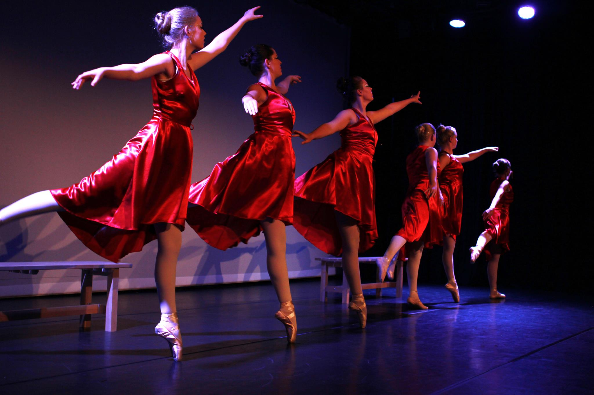
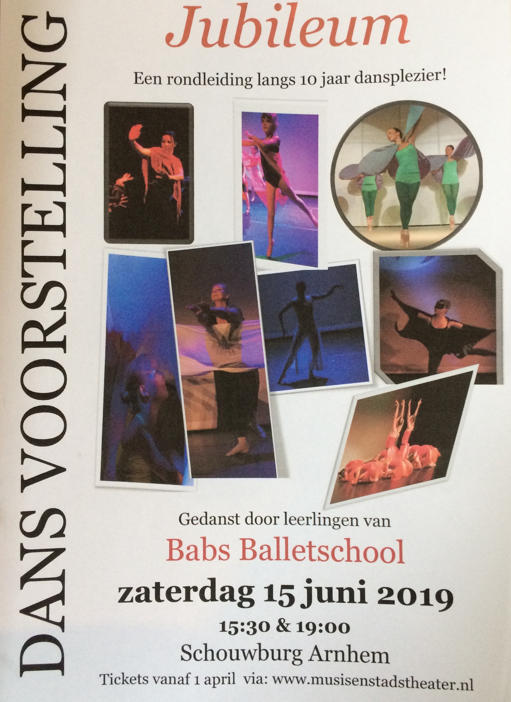

Jubileum voorstelling

Op zaterdag 15 juni is onze Jubileum voorstelling in de schouwburg Arnhem. Er zijn twee voorstellingen; om 15:30 & om 19:00.
In de kleedkamer hangt een lijst met alle groepen wie wanneer danst.
Kaartverkoop Voorstelling
 De kaartverkoop is inmiddels van start gegaan en het loopt al aardig vol! er is deze keer geen limiet per leerling want we dansen in de grote zaal van de schouwburg. Nodig je publiek dus vooral uit om te komen kijken! kaartverkoop gaat via het theater:https://www.musisenstadstheater.nl/
Dansfeest en Reünie

Omdat we dit seizoen 10 jaar bestaan vieren we een feest met leerlingen en oud-leerlingen. Kom mee dansen en gezellig een drankje drinken en bijkletsen.
16:00-18:00 disco voor iedereen t/m 15 jaar.
20:00 tot ? iedereen vanaf 16 en ouder met de voetjes van de vloer!
Voor leerlingen en oud-leerlingen is de toegang gratis.
Mocht je nog iemand willen meenemen ( partner/ vriend(in)/ familie) dan mag dat natuurlijk, aan hen vragen we een kleine bijdrage die ze bij de ingang contant kunnen betalen. kids t/m 15 jaar 3,- euro vanaf 16 jaar 5,- euro
Meld je nu aan en heel graag tot de 22e! Dansante groet, Babs
aanmelden via babs@babsballetschool.nl
Kadootjes
Ter gelegenheid van het 10 jarig bestaan zijn er leuk kadootjes te koop. Bijvoorbeeld een set van danskaarten van de afgelopen 10 jaar voorstellingen! € 10,- per set.
Je kunt ook een jubileum t-shirt of hoodie met rits van de balletschool bestellen.
Verkrijgbaar in zwart in diverse maten. Ook in kindermaatjes.
bestel via babs@babsballetschool.nl

Vakanties: 
de vrije dagen wijken iets af van de schoolvakanties.
MeiVakantie: maandag 29 april t/m vrijdag 3 mei 2019
Babs afwezig: maandag 13 mei t/m vrijdag 17 mei 2019 LET OP! de lessen van Britt & Daphne gaan deze week wel gewoon door!
BalletPuzzel
 ⬆⬆⬇⬇⬅➡⬅➡ ba
⬆⬆⬇⬇⬅➡⬅➡ ba